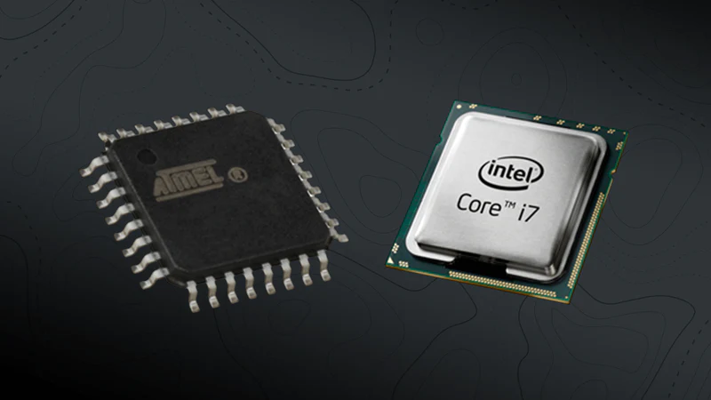

Microprocesadores y Microcontroladores
La principal diferencia entre ambos es la capacidad de procesamiento, mientras que el microcontrolador solo puede realizar una acción, el microprocesador gestiona las acciones dentro de una computadora y...
